|
Puce H1 : Permet une connexion sans fil plus rapide et une latence réduite, idéale pour les jeux et la diffusion audio.
Commandes vocales Siri : Activez Siri simplement en disant « Dis Siri », sans avoir besoin de toucher les écouteurs.
Double-tap : Touchez deux fois sur un AirPod pour lire/pause, passer au morceau suivant ou répondre à un appel.
Autonomie : Jusqu’à 5 heures d’écoute ou 3 heures de conversation avec une seule charge. Le boîtier de charge offre plus de 24 heures d’écoute supplémentaires.
Capteurs : Deux microphones beamforming, deux capteurs optiques, un accéléromètre détecteur de mouvement et un accéléromètre détecteur de voix.
Connectivité : Bluetooth 5.0 pour une connexion stable avec les appareils Apple. |  | Les AirPods 2 sont disponibles à différents prix en fonction du modèle et de l'état (neuf, reconditionné, etc.). Voici une estimation des prix actuels :
- Apple Store : autour de 179 € pour le modèle avec boîtier de charge Lightning.
- Amazon : environ 139 € à 159 € selon les offres et promotions.
- Rebuy : à partir de 119,99 € pour une paire reconditionnée.
|